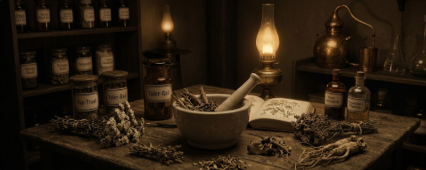

Ein Verzeichnis der nützlichsten und gefährlichsten Gewächse, Wurzeln und Pilze. In der feldmäßigen Chirurgie und abseits der Zivilisation ist das Wissen über die Botanik oft das Einzige, was zwischen Leben und Tod steht.
Weiße oder rote, schirmartige Blütendolden mit sehr feinen, gefiederten Blättern.
Stark blutstillend, entzündungshemmend und krampflösend.
Die zerquetschten Blätter werden direkt in blutende Wunden gepresst, oder als Tee bei Magenkrämpfen getrunken.
Eine unscheinbare Pflanze mit einer Dolde aus leuchtend roten Beeren und handförmigen Blättern.
Stark anregend für den Kreislauf, stärkt die Abwehrkräfte und lindert Erschöpfung.
Die dicke, fleischige Wurzel wird gereinigt und stundenlang gekaut oder als extrem bitterer Sud aufgekocht.
Große, herzförmige Blätter mit stacheligen, runden lila Blütenköpfen.
Blutreinigend, stark harntreibend und leicht antibakteriell.
Die Wurzel wird ausgegraben, getrocknet und als Tee gegen hartnäckige Hautausschläge, Ekzeme oder Nierenprobleme getrunken.
Lange, schilfartige Stängel an Gewässern mit dem typischen braunen, zigarrenförmigen Blütenstand.
Nährstoffreich (Wurzel), die flauschigen Samen wirken stark aufsaugend.
Die Daunen des reifen Kolbens werden historisch als saugfähige, weiche Wundauflage für nässende Verletzungen oder Brandwunden genutzt.
Niedrig wachsendes, bodendeckendes Kraut mit winzigen lilafarbenen Blüten und starkem Duft.
Stark schleimlösend, krampflösend in den Bronchien und antiseptisch.
Als starker Tee oder als Inhalationsdampf bei schwerem Husten, Asthma oder leichten Lungenentzündungen.
Buschig mit silbrig-grünen Blättern und violetten Blütenstielen, wächst in trockenen Gebieten.
Schweißhemmend, desinfizierend und verdauungsfördernd.
Als kalter Tee gegen starken Nachtschweiß (z.B. bei Tuberkulose), oder stark konzentriert als Lösung zum Auswaschen von infizierten Wunden.
Gelbe, knopfartige Blüten ohne weiße Blütenblätter, gefiederte grüne Blätter.
Verdauungsanregend und wärmend.
Wird als Tee oder Kautabak-Ersatz bei starker Übelkeit und Magenverstimmungen verabreicht.
Markante, rote, lippenförmige Blüten an einem quadratischen Stängel.
Antimikrobiell und extrem lindernd bei Hals- und Rachenentzündungen.
Die großen, fruchtig duftenden Blätter werden als heißer Tee aufgegossen und zum Gurgeln bei Diphtherie oder Halsschmerzen verwendet.
Unscheinbare Pflanze mit kleinen blassblauen Blüten und aufgeblasenen Samenkapseln.
Extrem stark krampflösend auf die Lunge, bei Überdosierung jedoch ein heftiges Brechmittel.
In kleinsten Mengen geraucht oder als Tinktur verabreicht, um bei schweren Asthmaanfällen die Atemwege aufzureißen.
Große ovale Blätter mit kugeligen, rosa-lilafarbenen Blütenständen. Bricht man den Stiel, tritt weißer Milchsaft aus.
Der Saft ist leicht ätzend und giftig (herzwirksam).
Äußerlich auf Warzen, Ringelflechte oder extrem hartnäckige Ekzeme getupft, um das Gewebe wegzuätzen.
Buschiger Strauch mit länglichen, ledrigen Blättern und auffälligen, meist rosa Blüten.
Hochgiftig! Verlangsamt und verstärkt den Herzschlag bis hin zum Herzstillstand.
Wurde in der Medizin fast nie legal verwendet. Im RP ein wunderbares Mittel für einen Kunstfehler oder ein Attentat.
Rötliche Stängel mit kleinen ovalen Blättern und lila-rosa Blütenständen.
Eines der stärksten natürlichen Antibiotika, pilzabtötend und magenberuhigend.
Das Öl aus zerkleinerten Blättern wird auf entzündete Zähne oder Pilzinfektionen gerieben. Als Tee gegen Darminfektionen.
Zarte, leuchtend gelbe oder orangefarbene Blüten auf behaarten Stielen.
Leicht schmerzlindernd, beruhigend und schlaffördernd (enthält milde Alkaloide).
Die getrockneten Blüten und Kapseln werden als Tee bei starker Unruhe, Schlaflosigkeit oder Nervenschmerzen verabreicht.
Kletternde Orchideenart mit gelblichen Blüten und ledrigen Blättern.
Beruhigend, stimmungsaufhellend und aromatisierend.
Genutzt, um den ekelhaften Geschmack anderer Medizin erträglich zu machen, oder als Beruhigungstee bei Hysterie.
Kleine, hängende, violette Glockenblüten an einem zarten Stiel.
Leicht schmerzlindernd, aber in größeren Mengen giftig (verursacht Erbrechen).
In sehr schwachen Dosierungen als Umschlag bei starken Kopfschmerzen oder Migräne auf die Stirn gelegt.
Große, weiße, schirmförmige Blütendolden mit oft einem dunkelroten Punkt in der Mitte.
Nährstoffreich, die Samen wirken harntreibend und blähungslindernd.
Gekochte Wurzel zur Stärkung. Ein Sud aus den Samen hilft bei Nierensteinen oder schweren Blähungen.
Sieht aus wie kleine Gänseblümchen; weiß mit dicker gelber Mitte. Starker Geruch.
Fiebersenkend, entzündungshemmend und gefäßerweiternd.
Die extrem bitteren Blätter werden roh gekaut, um schwere Migräneattacken zu stoppen oder hohes Wundfieber zu senken.
Quadratischer Stiel, gezackte Blätter und lila Blütenquirle. Starker, frischer Geruch.
Kühlend, stark krampflösend auf den Magen-Darm-Trakt und leicht betäubend auf der Haut.
Als starker Tee bei Übelkeit und Cholera-Symptomen, oder zerrieben als kühlende Paste auf Insektenstichen.
Brombeere, Himbeere, Heidelbeere, Schwarze Johannisbeere, Scheinbeere.
Beeren sind vitaminreich und blutbildend. Die Blätter enthalten gewebestrafende Gerbstoffe.
Der Saft zur Stärkung nach Blutverlust. Ein Tee aus den trockenen Blättern ist ein exzellentes Mittel gegen starken Durchfall.
Riesenschirmpilz (Parasol Mushroom) & Klapperschwamm (Ram's Head).
Extrem nahrhaft und leicht immunstimulierend.
Zu einer kräftigen Brühe gekocht, um halb verhungerte, fiebrige oder blutarme Patienten schnell aufzupäppeln.
Leuchtend gelb-orange Korbblüten an behaarten Stängeln, wächst oft in Bergregionen.
Stark abschwellend, entzündungshemmend und schmerzlindernd bei stumpfen Traumata.
Als Tinktur oder Salbe bei Prellungen und Blutergüssen. Achtung: Giftig auf offenen, blutenden Wunden!
Grüne, aufrecht wachsende Pflanze mit gezackten Blättern, die bei Berührung brennen.
Stark durchblutungsfördernd, harntreibend und eisenreich.
Als Tee zur "Blutreinigung". Bei schwerem Rheuma werden Gliedmaßen mit frischen Brennnesseln "ausgepeitscht".
Hohe Pflanze mit zartrosa Blütendolden. Die Wurzel hat einen extrem strengen, unangenehmen Geruch.
Stark beruhigend, schlaffördernd und nervenentspannend.
Die getrocknete Wurzel als Tee oder Tinktur bei schwerer Schlaflosigkeit, Hysterie und Panikattacken.
Kleine Blüten mit weißen Blättern und gewölbter, gelber Mitte. Apfelartiger Duft.
Krampflösend, wundheilend und leicht antibakteriell.
Als Tee bei Magenkrämpfen, als Inhalation bei Erkältungen oder als warmer Umschlag für eiternde Wunden.
Hoher Stängel mit markanten, glockenförmigen, purpurroten Blüten mit Flecken im Inneren.
Hochgiftig! Steigert die Pumpkraft des Herzens, senkt aber die Herzfrequenz.
In allerkleinsten Dosen bei Herzschwäche. Überdosierung führt unweigerlich zu Herzrhythmusstörungen und Tod.
Buschige Pflanze mit braun-violetten Glockenblüten und glänzend schwarzen, kirschähnlichen Beeren.
Hochgiftig! Stark krampflösend, schmerzstillend, pupillenerweiternd und halluzinogen.
Minimalste Dosis bei extremen Koliken oder Asthma. Tropfen ins Auge zur Pupillenerweiterung. Überdosis: Wahnsinn und Tod.